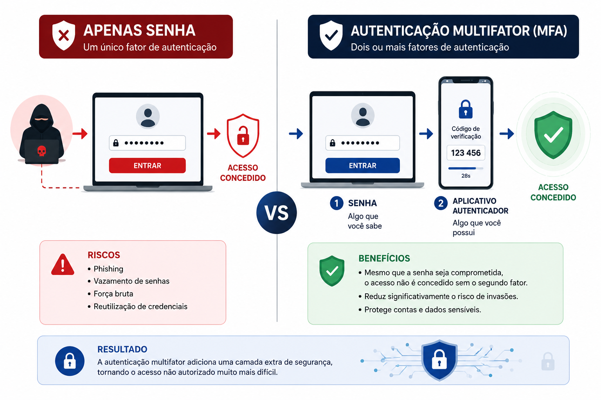
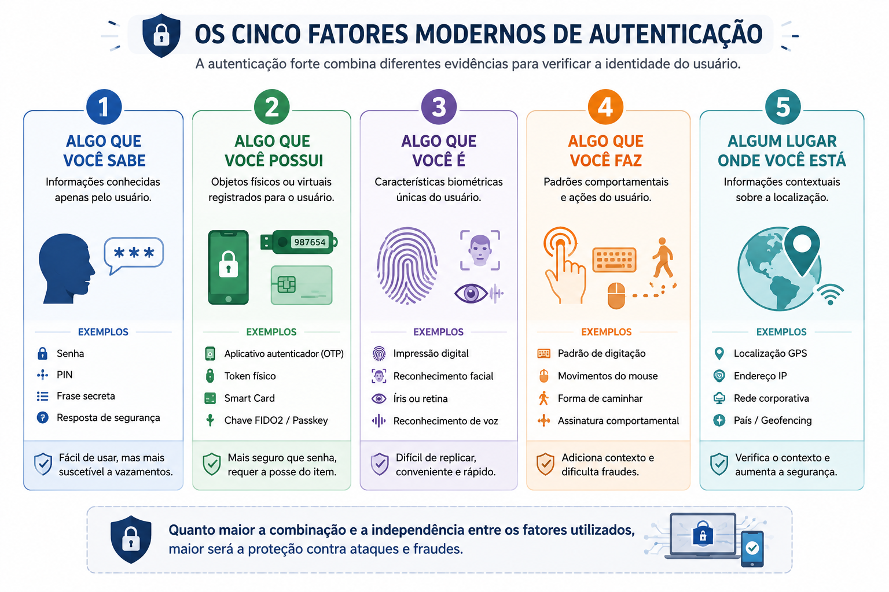
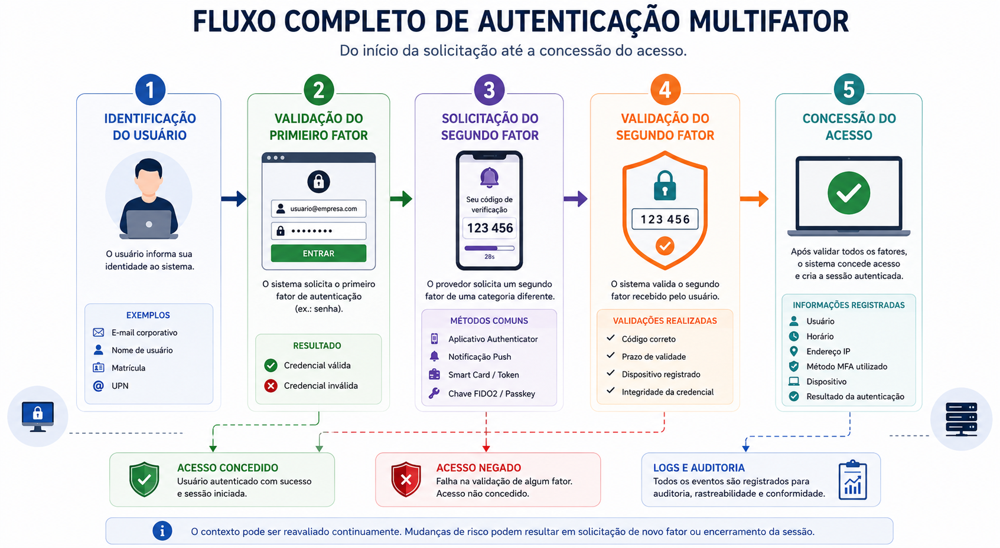
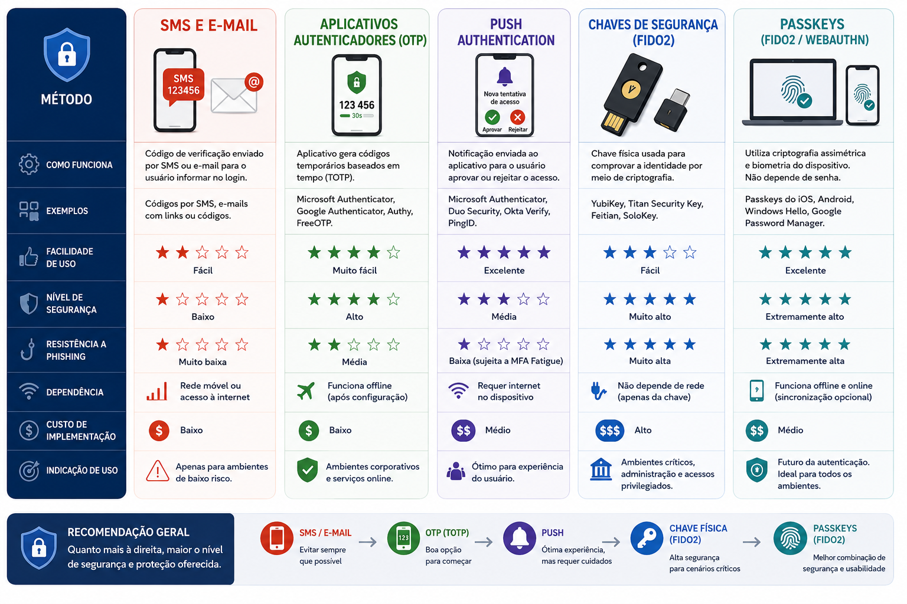
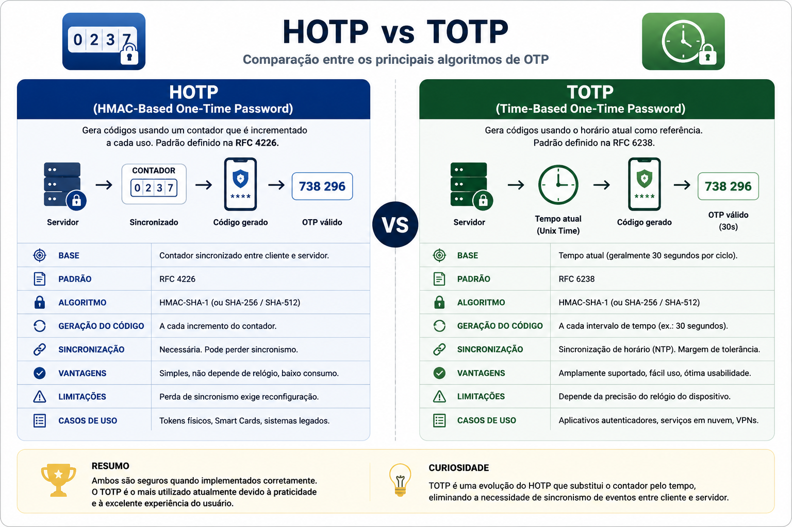
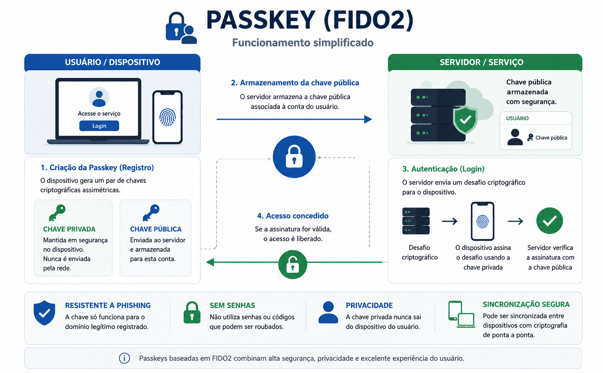
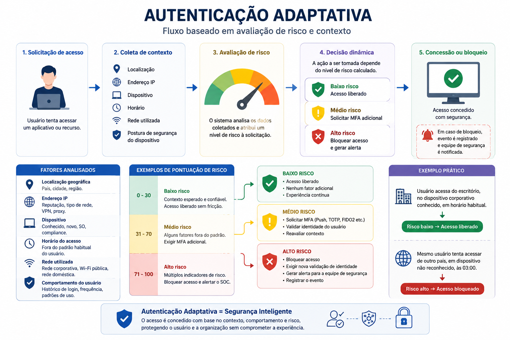
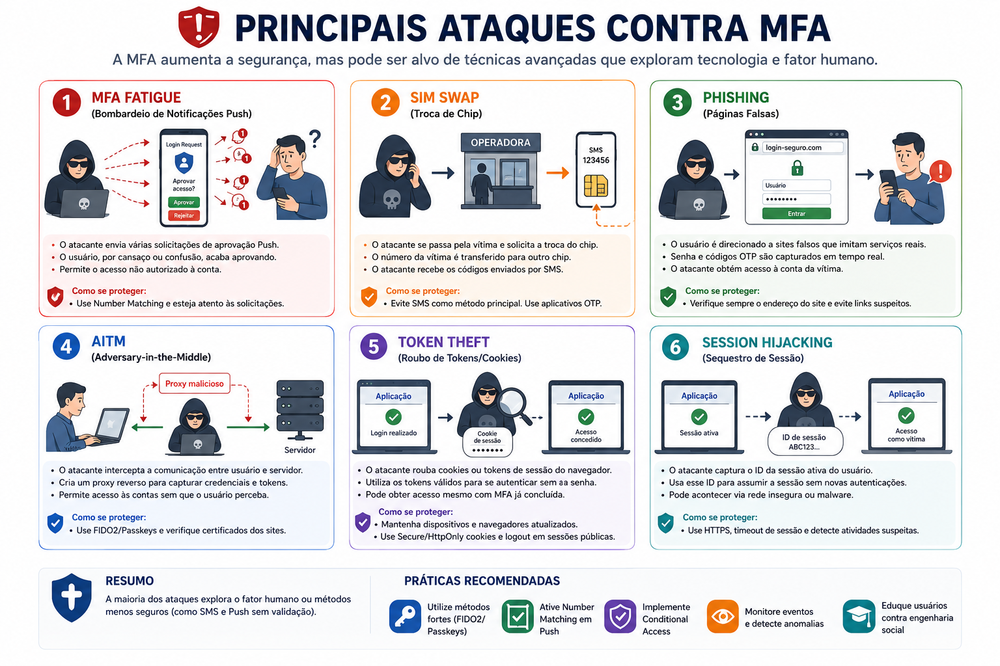
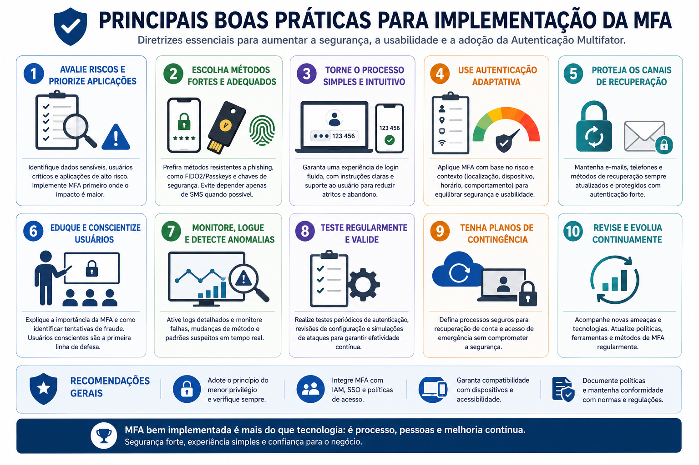
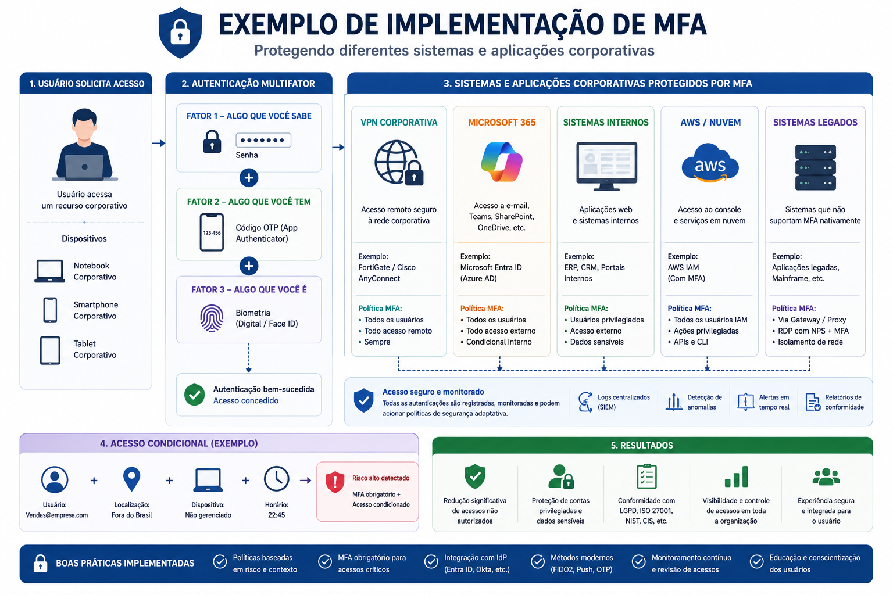

📋 Guia Rápido
Cybersecurity
Fundamentos da Segurança da Informação
🔑 Autenticação Multifator (MFA)
Iniciante / Intermediário
MFA
2FA
OTP
TOTP
HOTP
Push Authentication
FIDO2
Passkeys
Smart Cards
Adaptive Authentication
40 minutos
📖 Resumo Executivo
Durante muitos anos, a senha foi considerada suficiente para proteger contas de usuários e sistemas corporativos. Entretanto, o crescimento dos ataques cibernéticos demonstrou que depender de um único fator de autenticação representa um risco significativo para pessoas e organizações.
Ataques de phishing, vazamentos de credenciais, reutilização de senhas e técnicas de força bruta tornaram o comprometimento de contas um dos principais vetores utilizados por criminosos para invadir ambientes corporativos.
Para reduzir esse risco surgiu a Autenticação Multifator (Multi-Factor Authentication – MFA), uma abordagem que exige a combinação de dois ou mais fatores independentes antes de conceder acesso ao usuário.
Mesmo que uma senha seja descoberta, roubada ou vazada, o invasor continuará precisando apresentar um segundo fator válido, como um aplicativo autenticador, uma chave física de segurança, um certificado digital ou uma característica biométrica.
A Autenticação Multifator reduz significativamente a probabilidade de comprometimento de contas ao exigir múltiplas evidências de identidade antes da concessão do acesso.
Nos últimos anos, a MFA deixou de ser apenas uma boa prática e passou a ser um requisito presente em normas internacionais, frameworks de segurança e políticas corporativas adotadas por empresas de todos os portes.
Neste capítulo conheceremos os principais fatores de autenticação, entenderemos como funciona a MFA, veremos os diferentes métodos disponíveis atualmente e estudaremos ataques e boas práticas relacionadas à proteção de identidades digitais.
Compreender o funcionamento da Autenticação Multifator, identificar seus principais métodos de implementação, reconhecer os ataques direcionados aos mecanismos de MFA e conhecer as melhores práticas utilizadas para proteger contas e identidades em ambientes corporativos.
🔑 O que é Autenticação Multifator?
A Autenticação Multifator (MFA) consiste na utilização de dois ou mais fatores independentes para comprovar a identidade de um usuário antes da concessão do acesso.
Cada fator representa uma evidência diferente de identidade. Quanto maior a independência entre esses fatores, maior será a dificuldade para que um atacante consiga comprometer a conta.
Ao combinar múltiplos fatores, a organização reduz o impacto do vazamento de credenciais e aumenta significativamente o nível de segurança do processo de autenticação.

A utilização de duas senhas diferentes não caracteriza MFA.
Para existir Autenticação Multifator é necessário combinar
fatores pertencentes a categorias distintas, como uma senha e um
token físico, ou uma biometria e uma chave criptográfica.
🔄 MFA × 2FA
Embora frequentemente utilizados como sinônimos, os termos 2FA (Two-Factor Authentication) e MFA (Multi-Factor Authentication) possuem significados diferentes.
Utiliza exatamente dois fatores de autenticação distintos.
Exemplo:
Senha + Aplicativo OTP.
Utiliza dois ou mais fatores de autenticação.
Exemplo:
Senha + Biometria + Chave FIDO2.
Todo mecanismo 2FA é uma implementação de MFA. Entretanto, nem todo MFA está limitado a apenas dois fatores.
🛡 Os Fatores de Autenticação
A autenticação multifator baseia-se na combinação de diferentes evidências de identidade. Cada evidência pertence a uma categoria específica, denominada fator de autenticação.
Quanto maior a independência entre os fatores utilizados, maior será a dificuldade para que um atacante consiga comprometer uma conta.
Atualmente, a literatura de Segurança da Informação considera cinco fatores modernos de autenticação.

🧠 Algo que Você Sabe
Corresponde às informações conhecidas exclusivamente pelo usuário.
É o fator mais antigo e continua sendo amplamente utilizado, embora seja também o mais frequentemente comprometido por ataques como phishing, engenharia social e vazamento de credenciais.
• Senha.
• PIN.
• Frase secreta.
• Resposta de segurança.
✔ Fácil implementação.
✔ Baixo custo.
✔ Ampla compatibilidade.
❌ Pode ser descoberta.
❌ Pode ser reutilizada.
❌ Pode ser capturada por phishing.
📱 Algo que Você Possui
Nesse fator, a identidade é comprovada pela posse de um objeto físico ou virtual previamente registrado.
Mesmo que a senha seja comprometida, o invasor continuará necessitando desse dispositivo para concluir a autenticação.
• Aplicativo OTP.
• Token físico.
• Smart Card.
• Chave FIDO2.
• Passkey.
• VPN.
• Microsoft 365.
• Google Workspace.
• GitHub.
• AWS.
👆 Algo que Você É
Utiliza características biométricas do usuário para comprovar sua identidade.
As tecnologias biométricas evoluíram significativamente nos últimos anos e hoje estão presentes em smartphones, notebooks e sistemas corporativos.
• Impressão digital.
• Face.
• Íris.
• Retina.
• Voz.
✔ Conveniência.
✔ Rapidez.
✔ Dificuldade de compartilhamento.
Embora a biometria ofereça excelente experiência para o usuário, ela normalmente é utilizada para desbloquear uma credencial criptográfica armazenada de forma segura no dispositivo, e não como único mecanismo de autenticação.
🌍 Outros Fatores Modernos
Soluções modernas de autenticação também podem considerar características comportamentais e contextuais durante o processo de validação da identidade.
• Padrão de digitação.
• Movimentos do mouse.
• Forma de caminhar.
• Assinatura comportamental.
• Localização GPS.
• Endereço IP.
• Rede corporativa.
• País.
• Geofencing.
Esses fatores são amplamente utilizados por soluções de Autenticação Adaptativa, que analisam o contexto da solicitação antes de decidir se um fator adicional será exigido.
⚙ Como Funciona a Autenticação Multifator
Embora a experiência do usuário normalmente seja simples, uma autenticação multifator envolve diversas etapas executadas em segundos pelo provedor de identidade.
Após informar sua identidade, o usuário precisa comprovar que realmente é o proprietário da conta por meio da validação de um ou mais fatores adicionais.
Somente quando todas as verificações são concluídas com sucesso o acesso é concedido.

① Identificação do Usuário
O processo inicia quando o usuário informa sua identidade ao sistema.
Na maioria das organizações essa identificação é realizada por meio do endereço de e-mail corporativo, nome de usuário ou identificador único.
• Endereço de e-mail.
• Nome de usuário.
• Matrícula.
• UPN (User Principal Name).
Localizar a identidade que será autenticada.
② Validação do Primeiro Fator
Após identificar o usuário, o sistema solicita o primeiro fator de autenticação.
Na maioria dos ambientes esse fator corresponde à senha, embora também possa ser uma biometria ou um certificado digital.
• Senha.
• PIN.
• Biometria.
• Certificado Digital.
✔ Credencial válida.
❌ Credencial inválida.
Mesmo quando a senha é válida, o acesso ainda não é concedido. Será necessário validar um segundo fator de autenticação antes da liberação da sessão.
③ Solicitação do Segundo Fator
Após validar a senha, o provedor de identidade solicita um segundo fator pertencente a uma categoria diferente.
Dependendo da política de segurança da organização, diferentes métodos podem ser utilizados.
• Aplicativo OTP.
• Notificação Push.
• Smart Card.
• Token Físico.
• Passkey.
• Chave FIDO2.
• Política corporativa.
• Nível de risco.
• Tipo do dispositivo.
• Contexto da autenticação.
④ Validação do Segundo Fator
O segundo fator recebido pelo usuário é enviado ao provedor de identidade, que verifica sua autenticidade.
Caso o fator seja válido, o processo continua. Caso contrário, a autenticação é interrompida e o acesso é negado.
• Código correto.
• Prazo de validade.
• Dispositivo registrado.
• Integridade da credencial.
🟢 Autenticação aprovada.
🔴 Autenticação rejeitada.
⑤ Concessão do Acesso
Após validar todos os fatores exigidos pela política de segurança, o sistema cria uma sessão autenticada e concede acesso ao usuário.
Além da autorização de acesso, normalmente são registrados logs de auditoria contendo informações sobre o processo de autenticação.
Usuário.
Horário.
Endereço IP.
Método MFA utilizado.
Dispositivo.
Resultado da autenticação.
Auditoria.
Rastreabilidade.
Investigação Forense.
Conformidade.
Detecção de fraudes.
Em soluções modernas, como Microsoft Entra ID, Okta e Google Cloud Identity, o processo de autenticação não termina após o login inicial. Durante toda a sessão, o contexto pode ser reavaliado continuamente. Caso sejam identificados eventos como mudança de localização, troca de dispositivo, aumento do nível de risco ou comportamento incomum, o sistema pode solicitar um novo fator de autenticação ou até mesmo bloquear imediatamente o acesso.
🔐 Principais Métodos de Autenticação Multifator
Existem diferentes tecnologias capazes de implementar a Autenticação Multifator. Embora todas tenham o objetivo de aumentar a segurança do processo de autenticação, elas diferem em facilidade de uso, custo de implementação, resistência a ataques e nível de proteção oferecido.
A escolha do método mais adequado depende do nível de risco da organização, da criticidade dos sistemas protegidos e da experiência desejada para o usuário.

📩 SMS e E-mail
Os primeiros mecanismos de MFA amplamente utilizados baseavam-se no envio de códigos temporários por SMS ou e-mail.
Embora ainda sejam encontrados em diversos serviços, esses métodos apresentam limitações importantes relacionadas à segurança e, atualmente, são considerados opções de menor proteção.
✔ Fácil implementação.
✔ Baixo custo.
✔ Não requer aplicativo específico.
SIM Swap.
Interceptação de SMS.
Comprometimento do e-mail.
Dependência da operadora.
Sempre que possível, prefira métodos baseados em aplicativos autenticadores ou chaves criptográficas em vez de SMS.
📱 Aplicativos Autenticadores (OTP)
Os aplicativos autenticadores geram códigos temporários válidos por um curto intervalo de tempo, normalmente trinta segundos.
Como os códigos são gerados localmente no dispositivo, não existe dependência da rede de telefonia celular para sua utilização.
Microsoft Authenticator.
Google Authenticator.
Authy.
FreeOTP.
✔ Maior segurança.
✔ Funciona offline.
✔ Fácil utilização.
✔ Amplamente suportado.
🔔 Push Authentication
Na autenticação por Push, o usuário recebe uma notificação em seu dispositivo móvel solicitando a confirmação da tentativa de acesso.
Esse método elimina a necessidade de digitação de códigos, proporcionando maior praticidade durante o processo de autenticação.
✔ Excelente experiência.
✔ Processo rápido.
✔ Fácil adoção.
MFA Fatigue.
Push Bombing.
Aprovação indevida pelo usuário.
Sempre que disponível, habilite recursos como Number Matching ou confirmação por localização, reduzindo significativamente os riscos associados às notificações Push.
🔑 Chaves de Segurança e Passkeys
Os métodos mais modernos utilizam criptografia assimétrica para autenticar usuários sem transmitir segredos reutilizáveis pela rede.
As chaves FIDO2 e as Passkeys oferecem elevada resistência contra phishing, ataques Man-in-the-Middle e captura de credenciais, sendo atualmente consideradas as soluções mais seguras para proteção de identidades digitais.
FIDO2.
WebAuthn.
CTAP2.
Passkeys.
✔ Resistente a phishing.
✔ Criptografia assimétrica.
✔ Excelente experiência.
✔ Passwordless.
A evolução dos mecanismos de autenticação mostra uma tendência clara de substituição das senhas tradicionais por soluções baseadas em criptografia assimétrica. Passkeys e FIDO2 permitem que o usuário se autentique utilizando biometria ou desbloqueio local do dispositivo, enquanto a autenticação real ocorre por meio de um par de chaves criptográficas, eliminando diversos vetores clássicos de ataque relacionados ao uso de senhas.
🔢 OTP, HOTP e TOTP
Grande parte das soluções modernas de Autenticação Multifator utiliza códigos temporários conhecidos como One-Time Password (OTP).
Diferentemente de uma senha convencional, um OTP pode ser utilizado apenas uma única vez e possui um tempo de validade limitado, reduzindo significativamente o risco de reutilização por um invasor.
Existem dois padrões amplamente utilizados para geração desses códigos: HOTP e TOTP.

🔑 HOTP (HMAC-Based One-Time Password)
O HOTP foi padronizado pela RFC 4226 e gera códigos temporários utilizando um segredo compartilhado e um contador sincronizado entre o servidor e o dispositivo autenticador.
Sempre que um novo código é utilizado, o contador é incrementado, produzindo um valor completamente diferente.
Como depende da sincronização entre os contadores, esse método pode apresentar dificuldades quando ocorre perda de sincronismo entre cliente e servidor.
Baseado em contador.
RFC 4226.
Utiliza HMAC.
Código único por evento.
✔ Simples.
✔ Independente do relógio.
✔ Baixo consumo computacional.
Necessita sincronização do contador.
Pode exigir reconfiguração após perda de sequência.
⏱ TOTP (Time-Based One-Time Password)
O TOTP representa uma evolução do HOTP e atualmente é o padrão mais utilizado em aplicativos autenticadores.
Em vez de utilizar um contador, o algoritmo emprega o horário atual como variável de geração dos códigos temporários.
Normalmente, um novo código é gerado a cada 30 segundos, permanecendo válido apenas durante esse intervalo.
Baseado em tempo.
RFC 6238.
Utiliza HMAC.
Código renovado automaticamente.
Microsoft Authenticator.
Google Authenticator.
Authy.
FreeOTP.
✔ Amplamente suportado.
✔ Fácil sincronização.
✔ Excelente usabilidade.
📱 Como os Aplicativos Autenticadores Funcionam
Quando um usuário habilita MFA em um serviço, um segredo criptográfico é compartilhado entre o servidor e o aplicativo autenticador.
Esse segredo normalmente é distribuído por meio de um QR Code. Após sua leitura, tanto o servidor quanto o aplicativo passam a gerar exatamente os mesmos códigos temporários utilizando o mesmo algoritmo.
Como ambos conhecem o segredo compartilhado e utilizam o mesmo horário como referência, os códigos permanecem sincronizados sem necessidade de comunicação constante entre o aplicativo e o servidor.
Ao ativar MFA em um serviço como GitHub ou Microsoft 365, o usuário escaneia um QR Code utilizando um aplicativo autenticador. A partir desse momento, o aplicativo passa a gerar códigos temporários válidos por aproximadamente trinta segundos, que poderão ser utilizados como segundo fator de autenticação.
🛡 Segurança dos Códigos OTP
Embora os códigos OTP aumentem significativamente a segurança em relação ao uso exclusivo de senhas, eles ainda podem ser alvo de alguns tipos de ataque.
Ataques de phishing em tempo real podem induzir o usuário a informar o código temporário em páginas fraudulentas, permitindo que o invasor o reutilize imediatamente antes do término de sua validade.
✔ Vazamento de senha.
✔ Reutilização de credenciais.
✔ Ataques de força bruta.
Phishing em tempo real.
Proxy reverso malicioso.
Roubo de sessão autenticada.
Embora o TOTP continue sendo uma excelente opção para proteção de contas, soluções baseadas em FIDO2 e Passkeys oferecem um nível de segurança ainda maior, pois utilizam criptografia assimétrica e são projetadas para serem resistentes a ataques de phishing. Essa evolução representa uma mudança importante na forma como identidades digitais serão protegidas nos próximos anos.
🔐 FIDO2 e Passkeys
Nos últimos anos, a indústria de tecnologia iniciou uma mudança significativa na forma como usuários se autenticam em sistemas e serviços digitais. Em vez de depender de senhas, códigos temporários ou perguntas de segurança, surgiram mecanismos baseados em criptografia assimétrica capazes de oferecer maior segurança e melhor experiência ao usuário.
As tecnologias FIDO2 e Passkeys representam essa evolução e estão sendo adotadas por empresas como Microsoft, Google, Apple, GitHub, Amazon e diversas organizações ao redor do mundo.
Seu principal objetivo é eliminar a dependência das senhas, reduzindo drasticamente ataques de phishing, reutilização de credenciais e comprometimento de contas.

🗝 Criptografia Assimétrica
O funcionamento das Passkeys baseia-se em criptografia assimétrica, utilizando um par de chaves criptográficas.
Quando uma nova credencial é criada, o dispositivo do usuário gera automaticamente duas chaves matematicamente relacionadas.
Permanece armazenada exclusivamente no dispositivo do usuário.
Nunca é transmitida pela rede.
É enviada ao servidor durante o cadastro da credencial.
Pode ser armazenada sem comprometer a segurança.
Durante a autenticação, apenas a chave privada realiza operações criptográficas. Como ela nunca deixa o dispositivo, um invasor não consegue capturá-la por meio da comunicação de rede.
🌐 Como Funciona o FIDO2
O padrão FIDO2 é composto por dois protocolos principais que trabalham em conjunto para realizar autenticações seguras e sem senha.
Define como navegadores e aplicações Web realizam a comunicação com o autenticador.
Permite a comunicação entre navegadores, sistemas operacionais e autenticadores físicos, como chaves USB, NFC ou Bluetooth.
Essa arquitetura permite que diferentes fabricantes implementem autenticadores compatíveis, mantendo interoperabilidade entre plataformas.
Windows Hello.
Apple Face ID.
Touch ID.
Google Password Manager.
YubiKey.
Titan Security Key.
🔑 O que são Passkeys?
Uma Passkey é uma credencial baseada em criptografia assimétrica que substitui completamente a senha tradicional.
Para utilizar uma Passkey, o usuário normalmente desbloqueia seu dispositivo utilizando biometria, reconhecimento facial, PIN ou outro mecanismo local de segurança.
Esse desbloqueio apenas autoriza o uso da chave privada armazenada no dispositivo. A autenticação propriamente dita é realizada por meio da criptografia assimétrica, sem transmitir senhas pela rede.
✔ Passwordless.
✔ Excelente usabilidade.
✔ Alta segurança.
✔ Sincronização entre dispositivos.
Microsoft.
Google.
Apple.
GitHub.
Amazon.
PayPal.
🛡 Resistência ao Phishing
Uma das maiores vantagens das Passkeys é sua resistência aos ataques de phishing.
Durante a autenticação, a chave privada somente realiza operações criptográficas para o domínio legítimo que registrou a credencial. Caso o usuário acesse um site falso, mesmo que a interface seja idêntica à original, a autenticação será recusada.
Esse comportamento elimina uma das principais vulnerabilidades existentes nos mecanismos tradicionais baseados em senhas e OTP.
Especialistas consideram que as Passkeys representam a evolução natural da autenticação digital. Enquanto mecanismos como OTP e Push Authentication continuam dependendo da decisão do usuário para aprovar um acesso, as Passkeys utilizam criptografia assimétrica vinculada ao domínio legítimo da aplicação, reduzindo drasticamente a eficácia de ataques de phishing, proxy reverso e captura de credenciais. Essa combinação de alta segurança e excelente experiência do usuário explica por que grandes provedores vêm investindo na substituição gradual das senhas tradicionais.
🧠 Autenticação Adaptativa
Os mecanismos tradicionais de autenticação tratam todas as tentativas de acesso da mesma forma. Independentemente do local, do dispositivo utilizado ou do comportamento do usuário, o mesmo processo de autenticação é executado.
Entretanto, os ambientes corporativos atuais exigem decisões mais inteligentes. Usuários trabalham remotamente, utilizam diferentes dispositivos e acessam aplicações distribuídas em ambientes híbridos e em nuvem.
Nesse cenário surge a Autenticação Adaptativa (Adaptive Authentication), uma abordagem capaz de avaliar o contexto da tentativa de acesso antes de decidir quais fatores de autenticação deverão ser exigidos.

📊 Avaliação de Risco
Antes de conceder acesso, o provedor de identidade calcula um nível de risco associado à solicitação.
Essa avaliação considera diversos fatores que ajudam a determinar se a tentativa de autenticação apresenta comportamento esperado ou indícios de comprometimento.
🌍 Localização geográfica.
🌐 Endereço IP.
💻 Dispositivo utilizado.
🕒 Horário do acesso.
📶 Rede utilizada.
🔒 Método de autenticação.
✔ Login habitual.
✔ Dispositivo conhecido.
✔ País autorizado.
✔ Equipamento em conformidade.
✔ Histórico de comportamento.
Quanto maior o risco identificado, maior poderá ser o número de controles exigidos antes da liberação do acesso.
🚦 Decisões Dinâmicas
Ao contrário dos modelos tradicionais, a autenticação adaptativa não executa sempre o mesmo fluxo.
Dependendo do nível de risco calculado, diferentes decisões podem ser tomadas automaticamente pelo sistema.
Acesso liberado.
Nenhum fator adicional exigido.
Solicitação de MFA adicional.
Confirmação por Push.
TOTP.
Bloqueio da autenticação.
Nova validação da identidade.
Notificação ao SOC.
Um colaborador realiza login diariamente utilizando seu notebook
corporativo dentro do escritório. Nessa situação, o sistema pode
permitir o acesso apenas com autenticação biométrica local.
Caso o mesmo usuário tente acessar o ambiente poucos minutos
depois a partir de outro país, utilizando um dispositivo nunca
registrado anteriormente, a plataforma poderá exigir fatores
adicionais de autenticação ou bloquear completamente a tentativa
de acesso.
☁ Conditional Access
Diversos provedores de identidade implementam mecanismos de Conditional Access, permitindo definir políticas que controlam dinamicamente o processo de autenticação.
Essas políticas podem combinar identidade, dispositivo, localização, aplicação acessada e nível de risco para decidir se o acesso será concedido.
Exigir MFA fora da empresa.
Bloquear países específicos.
Permitir apenas dispositivos corporativos.
Exigir equipamento em conformidade.
✔ Automação.
✔ Maior segurança.
✔ Melhor experiência.
✔ Redução de riscos.
🔄 Continuous Access Evaluation
A autenticação moderna não termina quando o usuário conclui o login.
Diversas plataformas reavaliam continuamente o contexto da sessão durante sua utilização, permitindo responder rapidamente a mudanças de risco.
Caso sejam detectados comportamentos suspeitos, a sessão poderá ser encerrada automaticamente ou um novo fator de autenticação poderá ser solicitado.
Mudança de IP.
Mudança de país.
Troca de dispositivo.
Conta comprometida.
Revogação de privilégios.
Solicitar novo MFA.
Encerrar sessão.
Bloquear acesso.
Alertar equipe de segurança.
A Autenticação Adaptativa representa um dos pilares das arquiteturas Zero Trust. Em vez de confiar permanentemente em um usuário após o login inicial, o sistema considera que o risco pode mudar a qualquer momento. Dessa forma, identidade, dispositivo, localização e comportamento passam a ser avaliados continuamente, permitindo decisões de autenticação muito mais precisas e alinhadas às ameaças atuais.
🚨 Principais Ataques Contra MFA
Embora a Autenticação Multifator aumente significativamente a segurança das identidades digitais, ela não elimina todos os riscos.
Criminosos evoluíram suas técnicas e passaram a direcionar ataques específicos contra mecanismos de MFA, explorando vulnerabilidades tecnológicas e, principalmente, o comportamento dos usuários.
Conhecer essas ameaças é fundamental para escolher métodos mais seguros e implementar controles capazes de reduzir sua eficácia.

⚠ Ataques Mais Comuns
Os ataques atuais raramente procuram quebrar algoritmos criptográficos. Na maioria das vezes, os criminosos exploram falhas humanas, engenharia social ou mecanismos de autenticação menos robustos.
O atacante envia inúmeras solicitações Push até que o usuário aceite uma delas por engano ou por cansaço.
Fraude em que o número telefônico da vítima é transferido para um novo chip, permitindo o recebimento dos códigos enviados por SMS.
Captura de senhas e códigos OTP em páginas falsas que simulam os serviços legítimos.
Ataques utilizando proxies reversos para capturar sessões autenticadas em tempo real.
Roubo de cookies ou tokens de sessão após a autenticação do usuário.
Sequestro de sessões autenticadas sem necessidade de conhecer as credenciais da vítima.
🛡 Como Reduzir Esses Riscos
Nenhum mecanismo de autenticação é completamente invulnerável. Entretanto, algumas estratégias reduzem significativamente a probabilidade de sucesso desses ataques.
Resistentes a phishing e proxies reversos.
Autenticação baseada em criptografia assimétrica.
Evita aprovações acidentais em notificações Push.
Exige fatores adicionais quando o risco aumenta.
Detecta tentativas repetidas e comportamentos suspeitos.
Reduz o sucesso de ataques de engenharia social.
✔ Boas Práticas para Implementação da MFA
A eficácia da Autenticação Multifator depende tanto da tecnologia escolhida quanto da forma como ela é implementada e administrada.
Organizações que adotam boas práticas conseguem reduzir consideravelmente o risco de comprometimento de identidades, proteger contas privilegiadas e atender requisitos de conformidade.

- Ativar MFA para todos os usuários.
- Priorizar Passkeys e FIDO2 sempre que possível.
- Evitar SMS como método principal de autenticação.
- Habilitar Number Matching em notificações Push.
- Aplicar Conditional Access baseado em risco.
- Proteger especialmente contas administrativas.
- Monitorar eventos de autenticação continuamente.
- Revisar periodicamente dispositivos registrados.
- Treinar usuários contra ataques de phishing.
- Integrar MFA às soluções de IAM e Zero Trust.
🏢 MFA em Ambientes Corporativos
A Autenticação Multifator está presente nas principais plataformas utilizadas pelas organizações modernas, protegendo identidades, aplicações e serviços críticos.

Microsoft Entra ID.
Google Workspace.
AWS IAM.
GitHub.
VPN Corporativa.
Linux SSH.
Serviços Financeiros.
✔ Redução do risco de invasão.
✔ Proteção de contas privilegiadas.
✔ Atendimento a requisitos regulatórios.
✔ Fortalecimento da identidade digital.
📚 O que aprendemos?
- O conceito de Autenticação Multifator (MFA).
- A diferença entre MFA e 2FA.
- Os cinco fatores modernos de autenticação.
- Como funciona o fluxo completo de uma autenticação MFA.
- Os principais métodos utilizados atualmente.
- O funcionamento de OTP, HOTP e TOTP.
- Como FIDO2 e Passkeys utilizam criptografia assimétrica.
- O conceito de Autenticação Adaptativa.
- Os principais ataques direcionados à MFA.
- As boas práticas para implementação em ambientes corporativos.
🚀 Próximo Capítulo
Ao longo deste capítulo estudamos como fortalecer a autenticação utilizando múltiplos fatores e tecnologias modernas capazes de proteger identidades digitais.
Entretanto, proteger a autenticação representa apenas uma parte da gestão de identidades.
Como administrar milhares de usuários, permissões, aplicações e contas privilegiadas de forma centralizada e segura?
Essa resposta será apresentada no próximo capítulo da série, dedicado ao Identity and Access Management (IAM).
Estudaremos o ciclo de vida das identidades, provisionamento, desprovisionamento, Single Sign-On (SSO), federação de identidade, governança de acessos e integração com ambientes híbridos e em nuvem.
➡ Ler o próximo capítulo
✅ 🔺 Tríade CIA
✅ 🔒 Confidencialidade
✅ 🛡 Integridade
✅ ⚡ Disponibilidade
✅ 🔐 Criptografia
✅ 👥 Controle de Acesso
✅ 🆔 Autenticação
✅ ✔ Autorização
✅ 🔑 Autenticação Multifator (MFA)
➡ 🏛 Identity and Access Management (IAM)
⬜ 🔐 Privileged Access Management (PAM)
⬜ ☁ Zero Trust
⬜ 🌐 Active Directory
⬜ ☁ Microsoft Entra ID